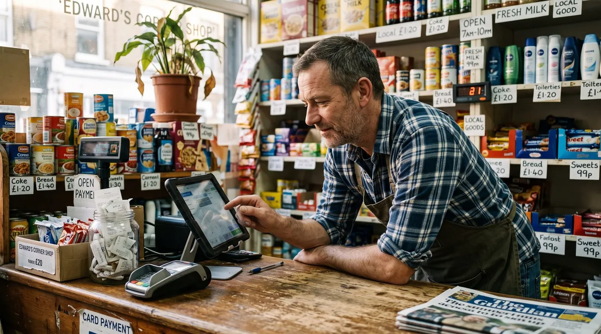

Best Convenience Store POS System in 2026 (Grocery & C-Store Guide)
A convenience store or small grocery runs on speed, thin margins and trust. You scan hundreds of items an hour, you reorder before the shelf goes empty, you sell deli and produce by weight, you check IDs on tobacco and alcohol, and you carry a few regulars on a tab until payday. A generic register can't do half of that. This guide walks you through exactly what a convenience store POS system needs to handle, the features that actually matter for a small grocery, the real costs, and how to choose, no hype, just the trade-offs.

What a convenience store POS really does in 2026
A point-of-sale system for a convenience store is no longer just a cash drawer with a screen. It rings up sales at speed, tracks thousands of SKUs in real time, prompts the cashier to check ID on age-restricted items, reorders stock before you run out, and lets you carry a trusted customer on account. Most modern systems run in the cloud on a tablet or terminal, pair with a barcode scanner and a scale, and sync to a dashboard you can open from home.
That matters because a grocery or corner store is a high-volume, low-margin business. You make money on tight inventory control and fast checkout, not on big-ticket sales. So the real question isn't "which app looks nice", it's "which system fits how I sell perishables, regulated goods and regulars, and what will it really cost me over a year?"
7 features a grocery / c-store POS can't skip
Ignore the long vendor checklists. For a convenience store or small grocery, these seven features are the ones that change your day and protect your margin.
1. Fast, reliable barcode scanning
This is the core job. A corner store moves hundreds of items per hour, often one-handed with a line forming. The POS must scan instantly, recognise the SKU, and ring it without lag. Barcode scanning is also the foundation for everything else, accurate inventory, pricing and reporting all depend on every item being scanned, not keyed.
2. Tight inventory & automatic reordering
Convenience and grocery stores live or die by stock control. A good POS tracks thousands of SKUs in real time, flags low stock the moment a fast-moving item hits its minimum, and helps you build reorder lists for your suppliers. The goal is simple: never run out of your top sellers, and never tie up cash in shelves of slow movers. Real-time counts also expose shrink, the quiet leak that eats thin grocery margins.
3. Sell by weight (scale & weighted barcodes)
Produce, deli, meat, nuts and bulk bins are sold by weight, not by unit. Your POS needs to read a weight, either from an integrated counter scale or from a weighted barcode printed in the deli or produce section, multiply it by the price per pound, and drop the line into the sale automatically. Without this, every weighed item becomes a manual calculation and a queue.
4. Shelf-life & perishable tracking
Unlike a clothing shop, a grocery sells things that expire. Milk, bread, deli and produce all have a shelf life, and unsold perishables are pure loss. A POS with inventory tools built for perishable goods helps you watch what's ageing on the shelf, mark down before it spoils, and order to demand rather than to habit.
5. Age verification for restricted items
Tobacco, vapes, beer and wine are a big share of c-store revenue, and a compliance risk. A convenience store POS should trigger an age-verification prompt the instant a restricted item is scanned, asking the cashier to confirm the customer's date of birth before the sale completes. That single prompt protects you from accidental underage sales and protects your staff from a snap decision under pressure.
6. Customer credit & tabs for regulars
This is the feature the big retail apps quietly forget. In a neighborhood grocery or corner store, regulars often run a tab, buy now, settle on payday. A POS with customer credit / tabs management records each on-account purchase against the customer, tracks the running balance, and lets you settle it cleanly when they pay. It replaces the paper notebook by the register with something accurate, searchable and honest. For trust-based neighborhood stores, this alone can decide which POS you keep.
7. Supplier management & multi-aisle organisation
A grocery buys from many suppliers and stocks many categories across multiple aisles. The right POS lets you organise products by category and supplier, see what each vendor owes you on returns, and group purchase orders by supplier so reordering takes minutes, not an afternoon. As you grow to a second register or a second location, central control over pricing and stock keeps every aisle consistent.
How to choose: a 6-point checklist
Before you compare brands, get clear on what your store actually needs. Run through these six questions and write down your answers.
1. How many SKUs and how much weighed product do you carry?
A pure-snack kiosk has different needs from a small grocery with a deli and produce. The more you sell by weight, the more scale and weighted-barcode support move to the top of your list.
2. What's your real monthly card volume?
This is the single biggest cost driver. A store doing $40,000/month in card sales at 2.6% pays over $1,000/month in processing, far more than any software subscription. Know your number before you compare.
3. Do you sell age-restricted goods?
If tobacco and alcohol are a real share of your revenue, age-verification prompts aren't optional, make them a hard requirement.
4. Do you carry regulars on credit?
If you keep a tab notebook by the till, you need native customer-credit management. Few mainstream POS apps do it well; treat it as a deciding feature, not a nice-to-have.
5. Do you need offline mode?
A corner store can't stop scanning because the internet dropped. An offline-capable POS keeps the line moving and syncs when you reconnect.
6. Are you locked into one processor or one piece of hardware?
Some systems force you onto their payment processing and their terminal. On grocery margins, a forced commission you can't shop around is expensive. Prefer systems that let you keep 100% of your card sales.
The real costs (including card-processing fees)
POS pricing has two layers, and convenience store owners routinely focus on the wrong one.
Layer 1: software subscription
This ranges from $0 on genuine free plans to roughly $50-$150+ per month for full grocery or c-store suites, sometimes plus paid modules for inventory depth or loyalty. It's the visible price, and usually the smaller one.
Layer 2: card-processing fees (the big one)
Every card sale carries a fee. In the US, in-person rates are typically around 2.3%-2.9% plus roughly 10-15 cents per transaction, depending on provider and plan. Here's the catch many "free" apps don't advertise loudly: several of them force you onto their own payment processor, so the commission is non-negotiable. In a high-transaction-count business like a convenience store, that processing bill dwarfs any subscription over a year.
The smartest question you can ask a POS vendor isn't "how much is the app?" It's "do you force a payment commission, or can I keep 100% of my card sales?" On grocery margins, that answer is worth more than any feature.
To make it concrete: at $40,000/month in card volume, the difference between 2.4% and 2.9% is roughly $200/month, about $2,400 a year, for the exact same sale. That gap is why processing terms matter more than a $20 subscription line.
Our top pick for convenience & grocery stores
digabloPos
For a convenience store or small grocery that wants to start lean and stay in control of its costs, digabloPos is the strongest all-rounder. The base plan is free forever (no time limit, no credit card), and you're scanning your first sale in about 5 minutes. It ships with inventory and barcode built in, true offline mode with automatic sync so an outage never stops the line, and a modular design so you switch on extra capability only when you grow into it. Two things set it apart for neighborhood stores: native customer credit / tabs management for your regulars, and it's ready for e-invoicing, so you're prepared as electronic invoicing spreads. And because there's no forced payment commission, you keep 100% of your card sales instead of handing a percentage to the POS on every transaction.
Why it fits a corner store
👍 Strengths
- Free forever, no credit card, live in ~5 min
- Inventory & barcode scanning built in
- True offline mode with auto-sync
- Modular, add capability as you grow
- Customer credit / tabs management for regulars
- Ready for e-invoicing / electronic invoicing
- No forced commission, keep 100% of card sales
👎 Notes
- Newer brand than the US giants
- Some advanced modules are paid
- You arrange your own scanner, scale and card reader
Want to test it without spending a cent?
Set up a real, working register for your store in about 5 minutes, barcode inventory, customer tabs and offline mode included. Free forever, no credit card.
Create my free register, 5 minComparison table
The features that matter for a convenience or grocery store, side by side. Figures are approximate US pricing and change often, treat them as a starting point, not gospel.
| Criterion | digabloPos | Square for Retail | Clover | NRS | Loyverse |
|---|---|---|---|---|---|
| Free plan | Yes (forever) | Free / paid | Paid software | Paid plans | Yes* |
| Software / month | $0 base | $0 / ~$89+ | ~$15-$85+ | ~$20-$50 | $0 + add-ons |
| In-person card fee | No forced commission | ~2.6% + 10¢+ | ~2.3%-2.6% + 10¢ | Via processor | Via chosen reader |
| Barcode + inventory | Yes (built in) | Yes | Yes | Yes | Yes |
| Sell by weight / scale | Yes | Partial | Add-on | Partial | Limited |
| Age verification | Yes | Partial | Yes | Yes | Limited |
| Customer credit / tabs | Yes | Limited | Add-on | Yes | No |
| Offline mode | Yes | Partial | Partial | Partial | Partial |
| Setup time | ~5 min | Fast | Slower / contract | Hardware-led | Fast |
*Free or starter tiers come with conditions (higher processing rates, paid add-ons, or hardware requirements). Pricing checked June 2026 against official pricing pages and specialist comparison sites. Vendor pricing and feature availability change frequently and vary by country, plan and contract, always confirm current details on each official site before deciding.
How the well-known options stack up
Square for Retail is a clean, easy starting point for very small grocery and convenience stores, with solid barcode inventory; the trade-off is a per-transaction card fee on its own processor and only partial fit for weighed items and store tabs. Clover is flexible across retail and quick-service and handles age-restricted goods well, but typically involves paid software and, often, multi-year processor contracts, read the fine print. NRS is built specifically for convenience and grocery stores and is one of the few mainstream options with strong store-credit and tab features, though it leans on its own hardware and processing. Loyverse is a genuinely good free retail register with inventory and staff features sold as add-ons, but weighed items, age checks and customer tabs are limited. digabloPos earns the top spot here because it combines built-in barcode inventory, sell-by-weight, age verification, native customer credit/tabs and offline mode on a free-forever base, without forcing a card commission.
5 mistakes to avoid
- Judging by the subscription alone. A "free" app that forces 2.9% on every card sale costs a high-volume c-store far more than a paid plan with cheaper processing. Always compare the 12-month total.
- Ignoring sell-by-weight. If you have a deli, produce or bulk bins, a POS that can't read a scale turns every weighed item into a manual queue. Test it with a real scale before you buy.
- Skipping age verification. One missed ID check on tobacco or alcohol can cost you fines or your license. Make the prompt a hard requirement.
- Forgetting customer credit. If your regulars run tabs, a POS without native store-credit management pushes you back to the paper notebook, and the errors that come with it.
- Skipping offline mode. One internet outage during a Friday rush will teach this lesson the expensive way. Check it works before you commit.
Ready to scan your first sale?
Create a free register in about 5 minutes, barcode inventory, customer tabs and offline mode included, no commitment, no credit card, and you keep 100% of your card sales.
Create my free register, 5 minFAQ
What is the best POS system for a convenience or grocery store in 2026?
There's no single winner for every shop. The best convenience store POS handles fast barcode scanning, deep inventory with low-stock alerts and reordering, sell-by-weight items, age-verification prompts for tobacco and alcohol, and customer credit or tabs for regulars. If you want to start free and keep full control of your costs, a free-forever system with barcode inventory, offline mode, pay-as-you-grow modules and native customer-credit management is the strongest all-round pick.
How does a grocery POS handle items sold by weight?
A grocery POS sells by weight either through an integrated counter scale or through weighted barcodes printed in the deli or produce section. The system reads the weight, multiplies by the price per pound, and adds the line to the sale automatically, essential for produce, deli, meat, nuts and bulk goods.
Can a convenience store POS manage age-restricted items?
Yes. A good convenience store POS triggers an age-verification prompt when a tobacco, vape or alcohol item is scanned, asking the cashier to confirm the customer's date of birth before the sale completes. This helps you stay compliant and protects staff from accidental underage sales.
What is customer credit or tabs management?
Customer credit (a tab or store account) lets trusted regulars buy now and pay later. The POS records each on-account purchase against the customer, tracks the running balance, and lets you settle it when they pay, a common, trust-based feature in neighborhood grocery and corner stores, and a strong reason to choose a POS that supports it natively.
Do I need a special POS for a small grocery, or will a generic one do?
A small grocery can run on a general retail POS, but you'll want specific features: barcode scanning for thousands of SKUs, tight inventory with reordering, sell-by-weight support, shelf-life tracking, age verification and customer tabs. Choose a system that includes or modularly adds these rather than a bare-bones register.
Does a convenience store POS work offline?
The best ones do. With true offline mode you keep scanning and selling even if the internet drops, and data syncs automatically when you reconnect, important for a busy corner store where an outage must never stop the line at the till.